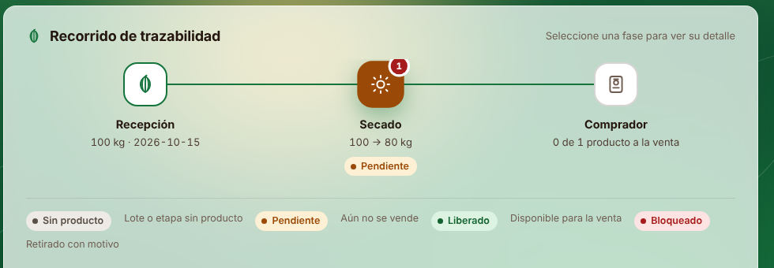
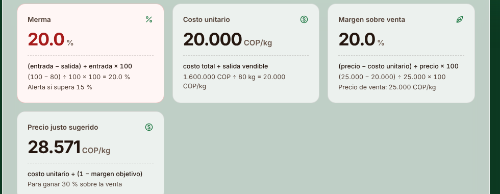
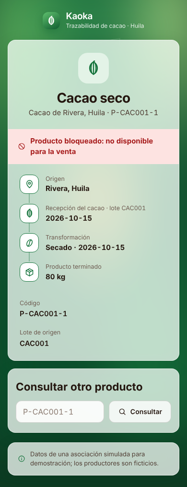

Kaoka
El problema
Una asociación cacaotera del Huila anota en cuadernos, hojas de cálculo y mensajes. Cuando un comprador reclama, nadie puede reconstruir rápido el origen, la merma ni el costo.
Propuesta de valor

Producto funcionando · demostración en vivo

Diferenciador · Precio justo sugerido: costo unitario ÷ (1 − margen objetivo). Con 20.000 COP/kg y 30 % de margen, vender a mínimo 28.571 COP/kg.
80 pruebas automatizadas · 25 casos ejecutados · trazabilidad de 100 registros en 0,14 s · funciona sin Internet · respaldo con verificación de integridad

Quién paga y cuánto
Plan Kaoka Asociación
al mes por asociación · paga la asociación
| Costo mensual estimado | COP |
|---|---|
| Soporte: 3 h × 25.000 | 75.000 |
| Visita trimestral prorrateada | 15.000 |
| Nube, IA, licencias | 0 |
| Total | 90.000 |
Usamos nuestra propia fórmula: 90.000 ÷ (1 − 0,30) = 128.571 → 130.000 COP, margen 30,8 %.
Cifras estimadas; se validan en el piloto.
Piloto de 30 días
Semana 1: instalación y medición inicial · Semanas 2–3: uso diario · Semana 4: medición final y reclamo simulado.
130.000 COP el primer mes, con instalación, capacitación, respaldo y soporte. Si no se cumplen las dos primeras metas, el segundo mes no se cobra.